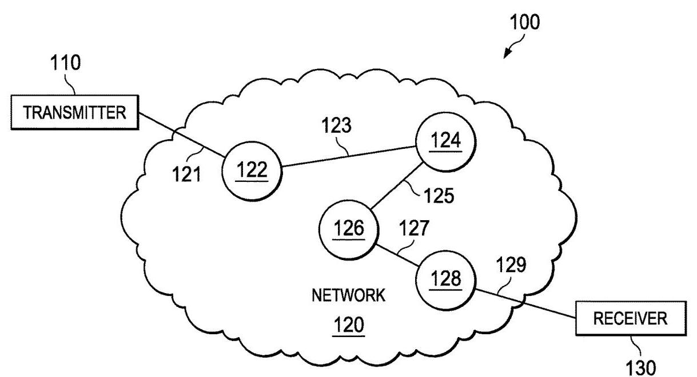
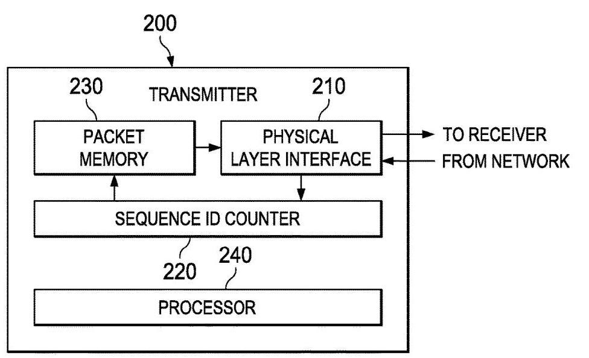
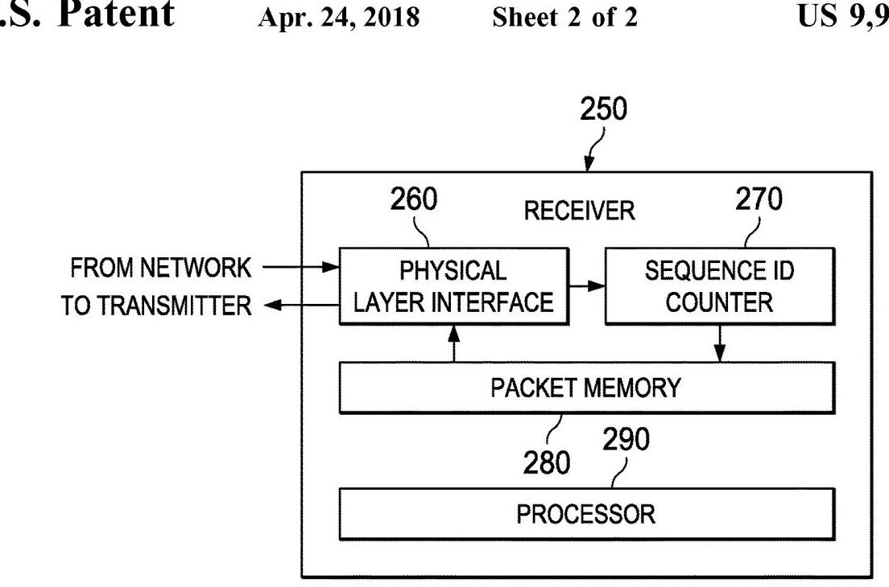
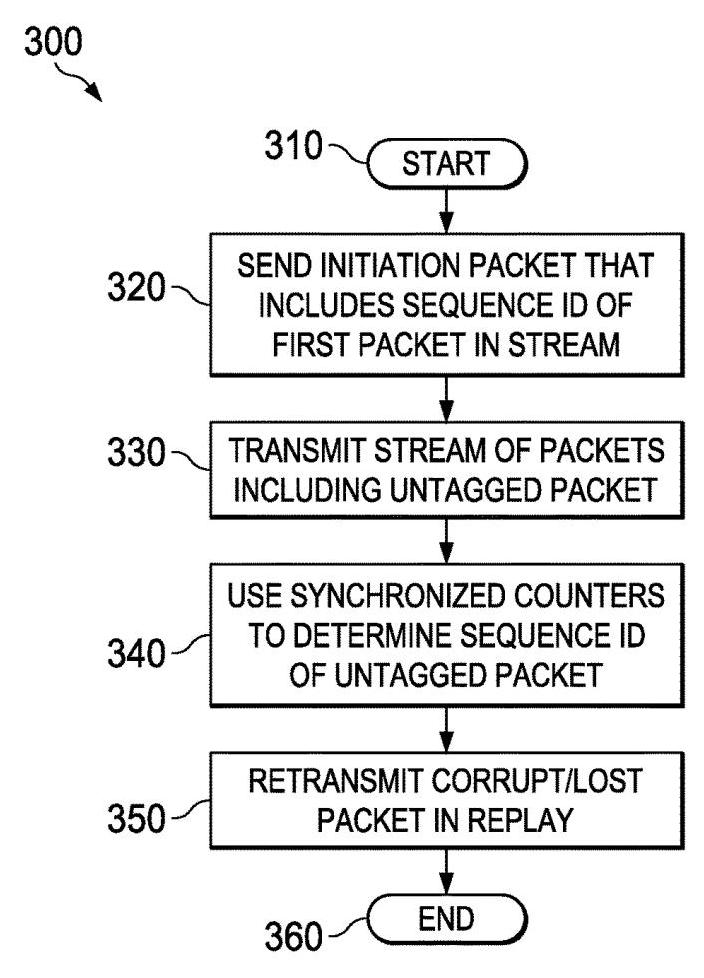

SYSTEM AND METHOD FOR ENABLING REPLAY USING A PACKETIZED LINK PROTOCOL 深度解读
作者：Dennis Ma, Michael Osborn, Eric Tyson, Stephen D. Glaser, Marvin Denman, Jonathan Owen, Mark Hummel
会议/期刊：United States Patent US 9,954,984 B2，授权日 2018-04-24，申请人为 NVIDIA Corporation
一句话总结：这份专利提出在 packetized link protocol 的 replay 机制中，用 transmitter 和 receiver 两端同步的 sequence ID counters 隐式标识未带 ID tag 的 packet，从而减少每包携带 tag 带来的带宽损耗，同时仍能定位丢失或损坏的 packet 并触发重传。
一、问题定义
这份专利关注的是 packetized link protocol 中的 error recovery，尤其是 replay 机制。背景是两个设备通过 link protocol 传输 packet；如果某个 packet 在链路中丢失或损坏，receiver 需要能告诉 transmitter 只重发出错的 packet，而不是重发整个流。传统方案是在每个 packet 中嵌入一个 identifying tag 或 ID tag，receiver 根据这个 tag 确认哪个 packet 丢失或损坏。
这类设计可靠，但问题也直接：ID tag 是 in-band metadata，它占据 packet header 或 payload 附近的比特预算。对高带宽互连来说，每个 packet 都带 tag 会降低有效数据带宽；如果把 ID tag 改成 out-of-band control stream，也仍然需要额外 stream，占用 transmitter/receiver 的总处理和链路资源。本文的切入点就是：replay 确实需要 packet identity，但并不一定需要每个 packet 显式携带 identity。
动机评估：动机是 solid 的，但文本论证偏专利化。它清楚指出每包 ID tag 带来的带宽代价，并把场景落到 streaming multimedia、CPU/GPU 或 GPU/GPU 互连、NVLink 这类高吞吐场景；不过专利没有量化 tag overhead，例如每个 tag 的 bit 数、对 flit 利用率的影响、以及在真实 workload 下的带宽收益。因此问题真实存在，但收益规模需要读者根据具体协议参数另行估算。
核心 Insight：packet 的 sequence ID 可以由“起点 ID + 两端同步计数”隐式推导，而不必随每个 packet 发送。只要 transmitter 和 receiver 在 stream 开始、replay 开始或 idle 时把 counter 对齐，后续 packet 的身份就可以由本地 counter 计算出来。这个 insight 把 replay 所需的“可定位性”从每包显式 tag 转移到协议状态机维护，从而用少量同步 packet 替代大量 per-packet metadata。
二、相关工作
专利正文没有学术论文式的 related work section，但它在 Background 和引用专利中隐含了三类既有路线。
第一类是传统 packetized link replay。它的核心思路是在每个 packet 中嵌入 ID tag，receiver 检测到 corrupted/lost packet 后根据 tag 请求 transmitter 只重发对应 packet。这类方法可靠、工程上成熟，专利也承认它已广泛使用，尤其是在 streaming video 场景中。它的不足是每包都要付出 metadata 成本。
第二类是 out-of-band identification。它不把 ID tag 塞进数据 packet，而是通过单独 control stream 传递 identity 或 replay 控制信息。这样可以避免污染数据 packet 格式，但并没有真正消除带宽和处理资源开销，因为系统仍需维护额外 stream。
第三类是链路层 error detection/recovery 机制，例如基于 CRC 检测 payload 或 sequence identity 是否一致，以及通过 ack/timeout 触发重传。本文没有否定这些机制，而是把它们作为底层积木：CRC 仍用于判断 corrupted/lost，ack/timeout 仍可触发 replay，创新点只在于 sequence ID 的显式传输频率被降到很低。
三、技术挑战
挑战 1：不发送 ID tag 仍要唯一定位 packet。 replay 的前提是 transmitter 和 receiver 对“哪一个 packet 出错”有共同认识。如果取消每包 ID tag，就必须保证两端能从本地状态推导出同一个 sequence ID，否则 replay 会重发错包。
挑战 2：counter synchronization 不能自身吃掉太多带宽。 如果为了省每包 ID tag，却频繁发送同步消息，收益会被抵消。因此同步点需要尽量少，并最好放在 stream 起始、replay 起始或 data channel idle 这类天然适合做控制同步的位置。
挑战 3：packet 丢失会破坏 receiver 的计数直觉。 对 corrupted packet，receiver 至少收到一个实体并可验证 CRC；对 lost packet，receiver 可能根本没有收到该 packet。如果 counter 只简单按接收事件递增，丢包会造成两端状态漂移。因此专利引入“基于隐式 sequence ID 的 CRC 验证”来识别收到的 packet 是否就是期望 packet。
挑战 4：replay packet 与普通 packet 的边界要清楚。 replay 之前需要 receiver 知道后续 stream 是重传，且知道 replay 的起始 sequence ID。否则 receiver 无法把后续 packet 解释为补偿前序错误，可能进入等待 replay 的 standby 状态。
挑战 5：工程落点要兼容不同粒度。 专利既描述 packet，也描述 NVLink 当前实现中的 128-bit flit，并指出 packet 可以用最后一个 flit 的 implicit sequence ID 来引用。这意味着方案不能只适配抽象 packet，还要能落到具体 link-layer transfer unit。
四、解决方案
整体思路
本文方案保留 replay 的基本语义：receiver 发现 packet 丢失或损坏后，transmitter 重发对应 packet。变化在于 packet identity 的表达方式。普通数据流中多数 packet 不携带 embedded ID tag，而是由 transmitter sequence ID counter 和 receiver sequence ID counter 共同维护隐式编号。stream 或 replay 之前发送 initiation packet，里面可以携带后续第一包的 sequence ID；之后两端按收到或确认的 packet 数推进 counter，由此确定每个 untagged packet 的 sequence ID。

Fig. 1 展示了 transmitter、receiver 与中间 network/data channel 的关系。该图的重要性不在于网络拓扑本身，而在于说明方案面向的是跨物理链路、跨协议或 proprietary link 的 packet stream：只要两端能维护一致的 sequence ID counter，就可以把 packet identity 从每个 packet 的显式字段中移出。
贯穿示例
可以把这个方案想成两个人按编号传递一叠文件。传统方案是在每一页右上角都打印页码；本文方案则是在开始时说“下一页从 100 号开始”，然后双方各自用计数器数页。第一张是 100，下一张是 101，再下一张是 102。只要双方计数同步，后续页面即使没有打印页码，也能知道它应该是什么编号。
如果 receiver 在期望 103 时发现 CRC 验证失败，它不需要从 packet 内读出 103，因为本地 counter 已经告诉它当前应是 103。它可以请求 replay，transmitter 从 replay buffer 中拿出 sequence ID 为 103 的 packet 重新发送。若 replay 之前需要重新对齐状态，transmitter 发送 replay initiation packet，告诉 receiver 后续 replay 从哪个 sequence ID 开始。
关键技术点
1. Initiation packet 建立隐式编号起点。 在发送普通 packet stream 或 replay stream 前，physical layer interface 发送 initiation packet，通知 receiver 后续会有 packet stream。在一个实施例中，initiation packet 包含第一包的 sequence ID；在另一个实施例中，stream 的第一包自身带 tag，其余 packet 不带 tag。这个设计解决的是“无 tag stream 如何确定起点”的问题。
2. Transmitter/receiver sequence ID counters 共同推导 packet identity。 transmitter 侧有 transmitter sequence ID counter，receiver 侧有 receiver sequence ID counter。两者在 stream 开始前、replay 前或 idle 时同步。之后普通 untagged packet 的 ID 由起点 ID 和 counter count 推导，避免每包嵌入 ID tag。

Fig. 2A 对应 transmitter embodiment。它包含 physical layer interface、transmitter sequence ID counter、packet memory/replay buffer 和 processor。图中的关键是 packet memory 与 counter 的组合：transmitter 不仅要能推导哪个 sequence ID 出错，还要保留尚未确认的 recent packets，才能在 replay 时取回并重发对应内容。
3. Receiver 用本地 counter 与 CRC 检测 lost/corrupt。 专利描述两种判断方式：payload CRC 可用于判断收到的 packet 是否 corrupted；针对 lost packet，还可以把 implicit sequence ID 纳入 CRC 计算和验证。注意这里的 sequence ID 没有随 packet 发送，而是在 transmitter 与 receiver 本地各自加入 CRC 计算/验证路径。若 receiver 用期望的 implicit sequence ID 无法通过 CRC，就说明收到的并不是期望 packet，原 packet 可视为 lost。

Fig. 2B 是 receiver embodiment。它强调 receiver 也需要自己的 sequence ID counter、packet memory/buffer 和 processor。该图支撑了本文的核心主张：隐式 ID 不是 transmitter 单边技巧，而是两端协议状态共同维护的结果。
4. Replay initiation packet 对重传流重新定界。 当 transmitter 未在一定时间内收到 ack，或检测到需要 replay 时，可以先发送 replay initiation packet，通知 receiver replay 将开始，并可携带 replay 第一包的 sequence ID。如果 replay initiation packet 不携带该 ID，也可以让 replay 的第一包带 tag。这使 replay stream 与普通 stream 的边界明确，避免 receiver 将重传数据误解释为新数据。

Fig. 3 把方法串成步骤：发送 initiation packet，发送包含 untagged packet 的 stream，用同步 counter 确定 implicit sequence ID，检测 lost/corrupt，再 replay 对应 packet。它是最适合作为协议状态机理解入口的图。
5. Idle-time synchronization 降低同步成本。 专利允许在 data channel idle 时同步 counter。这一点很工程化：如果同步控制信息放在空闲期，几乎不影响繁忙期数据带宽，也降低 counter 长时间漂移的风险。
6. Flit 粒度支持。 在 NVLink 例子中，packet 可分为多个 128-bit flits，flit 被隐式编号，packet 可由其最后一个 flit 的 implicit sequence ID 引用。这说明该专利的“packet ID”不一定是高层 packet 编号，也可以映射到链路层传输单元。
与已有方案的对比
相比每包嵌入 ID tag 的传统方案，本文的优势是把 per-packet overhead 变成 occasional synchronization overhead，理论上对小 packet、固定 flit、或 header 预算紧张的高速互连更有利。相比 out-of-band ID stream，它不需要为每个 packet 维护独立控制标识流，只在关键边界发送 initiation/replay initiation 信息。
它的局限也明显。第一，它依赖 transmitter 与 receiver counter 的强一致，一旦状态机 bug、ack 语义差异或异常 reset 让两端 diverge，问题会比显式 ID tag 更隐蔽。第二，专利没有给出 counter 位宽、wraparound、乱序、multi-lane reorder、multi-receiver multicast 等复杂场景的完整处理。第三，它没有用实验说明节省的 tag bits 是否足以抵消实现复杂度。
五、实验评估
实验设定
这是一份美国专利，不是实验型学术论文，因此没有 benchmark、硬件平台、baseline 实现或性能指标。文本只给出应用场景与实现例子，包括 streaming multimedia、CPU/GPU 或 GPU/GPU 之间的 intranet/NVLink 互连、128-bit flit、CRC、ack/timeout、replay buffer 等。
主要实验与结论
专利没有报告实验数据。它的论证方式是结构性和机制性的：传统方案每包带 ID tag 会占用 packet 长度；若改为同步 counters，只需在 stream 或 replay 边界提供起始 ID，就能让多数 packet 保持 untagged；再配合 CRC 和 replay buffer，仍可定位 lost/corrupt packet。
从工程判断看，方案的收益取决于三个参数：ID tag 的 bit 数、packet/flit 大小、以及需要同步或 replay 的频率。如果 packet 很小、ID tag 占比高、错误率低且 counter 同步稳定，收益可能明显；如果 packet 很大、tag 占比低、链路频繁出错或协议经常需要 resync，收益会变弱。
结论支撑性分析
专利充分支撑了“可以用同步 counters 隐式确定 untagged packet 的 sequence ID”这一机制声明，也覆盖了 transmitter、receiver 和 method 三类权利要求。但它没有实证支撑“带宽回收幅度”或“性能影响”这样的量化结论，也没有展示在真实 NVLink traffic、乱序路径、counter wraparound、链路 reset 后恢复等情况下的鲁棒性。因此报告这类文本时，应把它看成协议机制专利，而不是经过实验验证的系统论文。
六、附加洞察
结论 1：out-of-band ID stream 并不自动解决带宽问题，因为它仍占用系统可用于数据通信的总体资源。
- 出处：Detailed Description 开头关于 in-band/out-of-band ID tag 的讨论。
- 推理链条：传统 in-band tag 增加 packet 长度，降低 payload 承载能力；out-of-band 虽不增加数据 packet 长度，但需要额外 control stream；额外 stream 仍由 transmitter/receiver 处理并占用总体通信资源，因此专利选择减少“每包标识”本身，而不是简单换一条通道传 ID。
结论 2：counter synchronization 不必持续发生，只要在 stream 起点、replay 起点或 idle 期对齐即可。
- 出处：Detailed Description 对 synchronization timing 的描述，以及 Claim 3/9/16 对 idle synchronization 的覆盖。
- 推理链条：隐式 sequence ID 的关键是双方知道同一个起点并按同样规则递增；数据传输中频繁同步会抵消带宽收益；因此专利把同步放在 initiation packet、replay initiation packet 和 idle channel，既维持一致性又降低高负载时的开销。
结论 3：CRC 可以同时服务于 payload corruption 检测和 implicit sequence ID 的 lost detection。
- 出处：Method step 330-340 之后关于 CRC calculated against payload and optionally implicit sequence ID 的描述。
- 推理链条：receiver 可用 payload CRC 判断收到 packet 的内容是否损坏；若 CRC 覆盖 implicit sequence ID，receiver 即使没有收到显式 ID，也能验证“当前收到的 packet 是否对应本地期望 ID”；验证失败意味着 expected untagged packet 丢失或错位，从而触发 replay。
结论 4：某些 corrupt/lost packet 不一定需要 replay，若它不会造成实际数据损失，stream 可以继续。
- 出处：Detailed Description 对 receiver 判断 lost/corrupt packet did not cause actual data loss 的段落。
- 推理链条：replay initiation packet 给 receiver 提供后续 replay 的 first sequence ID；receiver 可据此判断前面的异常 packet 是否属于被 disregarded/stomped 或 non-replayable 的情况；若没有实际数据损失，继续 stream 比进入“CRC failed, waiting for replay”状态更好，可避免不必要的性能惩罚。
七、总结与评价
这份专利的核心贡献是把 replay 所需的 packet identity 从每个 packet 的显式 ID tag 转为两端同步 counter 推导，以 initiation packet 和 replay initiation packet 为边界维持状态一致。它的亮点在于抓住了高速互连中 per-packet metadata 的重复成本，并给出了 transmitter、receiver、method 三个层面的完整权利要求。
最大的不足是论证完全停留在机制层面，没有量化带宽收益，也没有展开复杂链路场景中的边界条件。对于研究者或工程师来说，它的价值更像是一个 link-layer replay design pattern：当 packet sequence 可由两端状态可靠重建时，可以考虑把显式编号从数据路径中移除，但必须认真处理 synchronization、CRC 覆盖范围、replay buffer、ack 语义和异常恢复。
八、章节脉络与段落速览
- Front Matter · Patent bibliographic information：交代专利号、授权日、题名、申请人、发明人、分类号和引用专利。
- ¶1-3 给出 US 9,954,984 B2、授权日 2018-04-24 和专利标题。
- ¶4-9 列出 NVIDIA 作为申请人/受让人以及七位发明人。
- ¶10-18 给出申请号、申请日、公开号、分类号、引用专利和审查员信息。
- Abstract：概括 receiver、transmitter 和 method 如何用 synchronized counters 为 untagged packet 确定 sequence ID。
- ¶1 说明方法包括发送包含 untagged packet 的 stream，并用同步 counters 判断需要 retransmit 的 lost/corrupt packet 的 sequence ID。
- Technical Field：界定本文属于设备间通信协议，尤其是 packetized link protocol 的 replay。
- ¶1 指出应用方向是 communication protocol between devices，重点是 enabling replay。
- Background：说明传统 replay 依赖每包 ID tag，可靠但有带宽开销。
- ¶1 定义 link protocol 和 packetized protocol，并指出 error recovery 是协议职责之一。
- ¶2 解释传统 replay 通过每包 ID tag 定位 lost/corrupt packet，并指出这种 in-band tag 在 streaming video 等场景中常见。
- Summary：从 method、transmitter、receiver 三个角度概述专利方案。
- ¶1 方法权利要求的核心是发送包含 untagged packet 的 stream，并用 synchronized counters 确定它的 sequence ID。
- ¶2 transmitter embodiment 包含 physical layer interface 与 transmitter sequence ID counter，并与 receiver counter 同步。
- ¶3 receiver embodiment 包含 physical layer interface 与 receiver sequence ID counter，并用两端 counters 确定 untagged packet identity。
- Brief Description：列出三张主要附图。
- ¶1 引出 drawings。
- ¶2 说明 Fig. 1 是包含 packetized data stream 的 network block diagram。
- ¶3 说明 Fig. 2A/2B 分别是 transmitter 和 receiver embodiments。
- ¶4 说明 Fig. 3 是 enabling replay 的 method flow。
- Detailed Description · Motivation and core idea：从传统 tag overhead 过渡到 counters-based implicit tagging。
- ¶1 重申传统机制在每个 packet 中使用 ID tag。
- ¶2 指出 in-band ID tag 增加 packet 长度，out-of-band stream 也会降低总体可用数据带宽。
- ¶3 提出如果不必为每个 packet 加 tag，就可回收部分带宽。
- ¶4 说明本文方法让 transmitter 和 receiver 用 counters 识别 packets，只有少数 packet 需要显式 ID。
- ¶5 说明同步主要发生在 initial packet、replay packet 或 idle channel，并让多数 packet 获得 implicit tag。
- ¶6 说明 transmitter 可发送带 ID tags 的 special packets 来通知 replay 并标识 replay packet。
- Detailed Description · Fig. 1 network：给出 transmitter、receiver 与 data channel 的系统上下文。
- ¶1 说明 network 120 可为有线、无线或混合网络，NVLink 是一个可能实施例。
- ¶2 描述 transmitter 110 经 data channel 向 receiver 130 发送 packet stream，并给出 128-bit flit 与 last-flit implicit sequence ID 的例子。
- ¶3 描述 receiver 130 接收该 packet stream。
- ¶4 说明 data channel 可经过多个 physical links 和 routers，协议可包括 TCP/UDP 或 proprietary NVLink。
- Detailed Description · Fig. 2A transmitter：描述 transmitter 侧组件与职责。
- ¶1 引出 transmitter 200 和 receiver 250 的 paired embodiments。
- ¶2 说明 transmitter 包含 physical layer interface、sequence ID counter 和 packet memory。
- ¶3 定义 tagged/untagged packet，并说明 untagged packet 可为需要重传的 corrupted/lost packet。
- ¶4 说明 initiation packet 在 stream 或 replay 前发送，可携带第一包 sequence ID，且本身是 non-replayable packet。
- ¶5 说明 transmitter sequence ID counter 计数 receiver 已确认收到的 packet。
- ¶6 说明 counter 通过 initiation packet 与 receiver counter 同步，也可在 idle 时同步。
- ¶7 说明 packet memory 保存尚未确认的 recently transmitted packets，通常表现为 replay buffer。
- ¶8 说明 processor 用同步 counters 和 first-packet sequence ID 推导 untagged packet 的 sequence ID，并支持 flit 级 implicit numbering。
- Detailed Description · Fig. 2B receiver：描述 receiver 侧组件与职责。
- ¶1 说明 receiver 包含 physical layer interface、packet memory 和 receiver sequence ID counter。
- ¶2 说明 receiver physical layer interface 接收包含 untagged packet 的 stream。
- ¶3 说明 receiver 接收 initiation packet，后续 first packet 可由 initiation packet 指定或自身 tagged。
- ¶4 说明 receiver counter 计数 received packets，并与 transmitter counter 在 transmission 前或 idle 时同步。
- ¶5 说明 receiver packet memory 保存尚未处理的 recently received packets。
- ¶6 说明 receiver processor 用两端 counters 和 first-packet sequence ID 推导 untagged packet 的 implicit sequence ID。
- Detailed Description · Fig. 3 method：把 protocol 行为整理为 flow。
- ¶1 说明 method 300 可用于多物理链路、多平台 data channel，也可用于 CPU/GPU 或 GPU/GPU 的 NVLink 互连。
- ¶2 step 310/320 中 transmitter 发送 initiation packet，并可包含后续第一包 sequence ID。
- ¶3 step 330 中 transmitter 发送包含 untagged packet 的 stream，header 可包含 payload CRC 以及可选 implicit sequence ID CRC。
- ¶4 说明若 initiation packet 提供 first sequence ID，则其他 packet 可全为 untagged；否则 stream 第一包可 tagged。
- ¶5 step 340 中 receiver/transmitter 用同步 counters 确定包含 untagged packet 在内的 implicit sequence IDs。
- ¶6 说明 receiver 用 payload CRC 判断 corrupted，用 implicit sequence ID CRC 判断 lost 或错位。
- ¶7 step 350 中 transmitter replay lost/corrupt packet，并可通过 replay initiation packet 指示重传即将开始。
- ¶8 说明 replay initiation packet 可同步 replay first sequence ID，或者由 replay 第一包 tagged。
- ¶9 说明若异常 packet 不造成实际数据损失，receiver 可继续 stream，避免等待 replay 的性能惩罚。
- ¶10 说明方法步骤可以合并、拆分或重排，除非权利要求明确限制。
- Implementation and storage media boilerplate：说明方法可由数字处理器、软件指令和非暂态介质实现。
- ¶1-2 说明 apparatuses/methods 可由 processor/computer 执行的软件指令实现。
- ¶3 说明 computer storage products 和 non-transitory computer-readable medium 的覆盖范围。
- ¶4 说明本领域技术人员可作 additions、deletions、substitutions 和 modifications。
- Claims：以 method、transmitter、receiver 三组权利要求限定保护范围。
- Claim 1-7 覆盖 method：发送含 untagged packet 的 stream、用 counters 确定 sequence ID、用 non-replayable initiation packet 同步、idle sync、CRC lost detection、first packet tagged 等。
- Claim 8-14 覆盖 transmitter：physical layer interface、transmitter sequence ID counter、receiver counter synchronization、idle sync、first/replay initiation packet 和 first packet tagged 等。
- Claim 15-20 覆盖 receiver：physical layer interface、receiver sequence ID counter、与 transmitter counter 同步、initiation packet、first packet tagged 等。